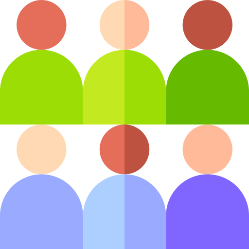

Can depression be treated?
Absolutely. Depression is actually among one of the most common and most treatable mental disorders. Between 80% and 90% percent of people with depression eventually respond well to treatment and almost all patients gain some kind of relief from their symptoms. Some of the more common methods to treat depression are through;
Medication-
Antidepressants are often prescribed to help modify the
brain’s chemistry in how it reacts to outside stimulation.
They are generally not habit-forming and are low risk for side effects.

Psychotherapy-
Mild cases of depression can be treated alone with
“talk therapy” while it is often coupled with antidepressants for moderate
to severe cases. Cognitive Behavioral Therapy (CBT) has been found to be
very effective and popular in treating depression.

Group Therapy –
Dialectical Behavioral Therapy (DBT) groups can be used
similarly to psychotherapy with the added benefit of learning from others
who are also coping with depression and how they have been treating it.
DBT also provides effective coping skills and strategies that have been
proven to cope with strong depressive symptoms.
Better Life Therapy employs several modalities and evidenced-based strategies in treating depression such as:

Dialectical Behavioral Therapy (DBT), individual and group sessions